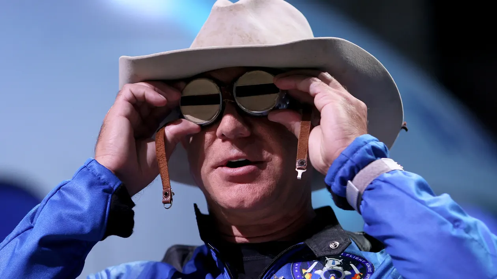
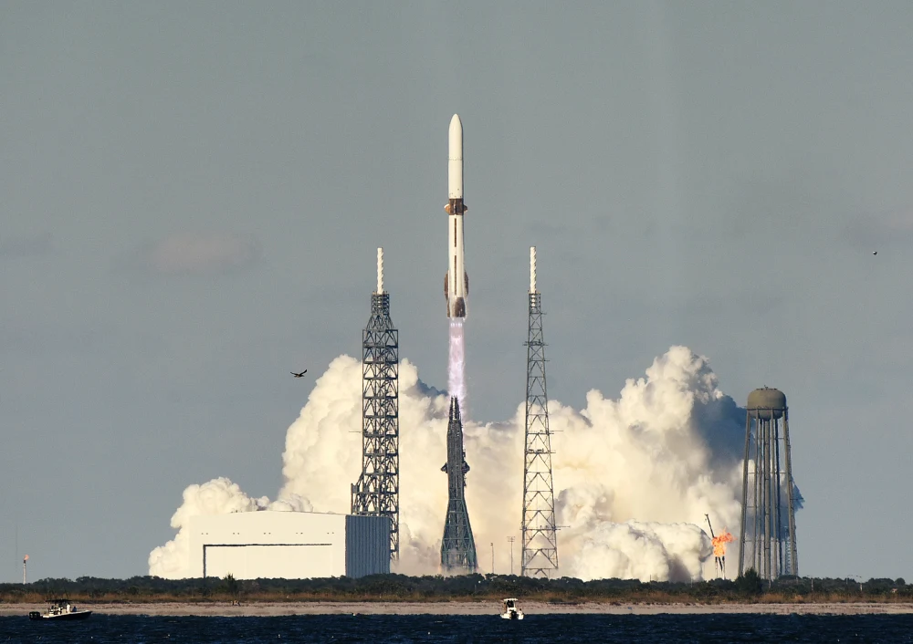
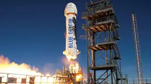

J eff Bezos, the creator of Amazon, founded the rocket business Blue Origin. They want to launch over 5,400 satellites to establish a new communications network. TeraWave will keep the internet connected throughout the world while moving massive amounts of data far faster than previous providers.
Blue Origin claimed that at its peak, its network could upload and download data at up to 6 terabits per second. This is substantially faster than what other commercial satellite providers currently offer.
By the end of 2027, the business intends to begin deploying TeraWave satellites. The network is intended for commercial, data center, and government users. Starlink is for private users, whereas Blue Origin's TeraWave is primarily for enterprises and governments. Blue Origin's planned network would initially service approximately 100,000 consumers, but it will have speeds that potentially revolutionize how data is handled and large government programs operate.
Why This News Matters:
Blue Origin's TeraWave satellite network could change how data is sent and processed, especially in areas like AI and government work.

The network says it will be able to move data much faster than satellite services do now, with speeds of up to 6 terabits per second. Blue Origin's TeraWave is for businesses and data centres, but it's going up against Elon Musk's Starlink and Amazon's Leo satellite network in a very competitive market. These three big companies are changing the way people connect to the internet and handle data in the future, which is a big deal for the satellite internet business.
Competition in the Satellite Internet Market
Despite launching thousands of satellites, Blue Origin would still have considerably fewer in space than Elon Musk's Starlink, which now dominates the satellite internet industry. Starlink, a subsidiary of Musk's rocket company SpaceX, also provides internet and phone services to individual users, although Blue Origin claims TeraWave will be aimed at data centers, corporations, and governments.

Blue Origin's TeraWave satellite network joins an increasingly congested satellite internet market that includes SpaceX's Starlink, which has previously launched over 9,000 satellites and serves over 9 million users worldwide. While Blue Origin and SpaceX compete for the satellite space, Bezos' Amazon is expanding its own service, Leo (previously Project Kuiper),with the goal of establishing a constellation of 3,236 low Earth satellites to serve consumers and companies.
Amazon's satellite venture is named Leo. While it now has approximately 180 satellites in orbit, it intends to have over 3,000 in orbit. Amazon intends to use Leo to provide high-speed internet access globally, with an emphasis on the common public rather than companies and governments. Leo is planned to supply internet to households and companies, while Amazon is presently in the process of placing its satellites.
Blue Origin has teamed with Amazon, and it is likely to oversee several future Leo satellite deployments. Amazon's Leo network has been in the works for several years, with the business launching satellites with the help of partners including United Launch Alliance and SpaceX.
Blue Origin's Milestones and Space Ventures
Blue Origin has completed key milestones, such as successfully landing a rocket booster on a floating platform, which was previously only accomplished by SpaceX. In April, Blue Origin launched an 11-minute space mission with an all-female crew that included Bezos' now-wife Lauren Sánchez, singer Katy Perry, and CBS host Gayle King.
Some observers attacked the flight, calling it "tone deaf" for celebrities to participate in such a short and costly trip during a time of economic hardship. Bezos has forecast that Blue Origin will eventually outperform Amazon, and he is heavily involved in space endeavours. Blue Origin's rocket launches continue to advance commercial space travel and satellite placement.
- Rocket booster landed
- All-female spaceflight
- TeraWave satellite network
- Competes with Starlink
Blue Origin plans to send 5,408 satellites into space to make their TeraWave communications network operational. This will put them in competition with Elon Musk's SpaceX and the Starlink service. The deployment of the satellites is set to start in the last three months of 2027.Satellites in low and medium Earth orbits, which are between 100 and 21,000 miles above Earth, will be able to send data at speeds of "up to 6 terabits per second."
Blue Origin's new network would serve businesses, data centres, and the government, making it faster to process vast amounts of data. This would be very different from SpaceX's Starlink, which is mostly about giving people access to the internet.
Blue Origin’s TeraWave: The Future of AI, Data Centers, and Space-Based Communication
In 2024, Jeff Bezos anticipated that Blue Origin would eventually outgrow Amazon. He started Blue Origin in 2000, and its CEO is Dave Limp, formerly of Amazon's devices division. He said: "I think it's going to be the best business that I've ever been involved in, but it's going to take a while." Blue Origin aims to be a prominent player in the burgeoning space industry, competing with SpaceX, whereas Amazon's Leo satellite network focuses on consumer-based internet service offers.

Blue Origin's TeraWave network is made to handle future data processing needs, especially as the use of AI grows and the need for data processing grows. The space industry is trying to build data centres in space. This could help meet the growing need for AI data processing while saving a lot of energy and resources on Earth. Blue Origin's satellites will be very important for the growth of AI and communication around the world because they can send and receive data very quickly.
Blue Origin, Amazon, and SpaceX are all in a good position to become the biggest players in the satellite internet business. SpaceX's Starlink is now the best since it has a huge network of satellites that give millions of people across the world fast internet. Both Amazon's Leo satellite network and Blue Origin's TeraWave network are coming to the market. They both have big plans for putting up satellites and giving people access to high-speed internet. As more people want satellite internet, the battle between two digital giants will change the way people talk to each other throughout the world.